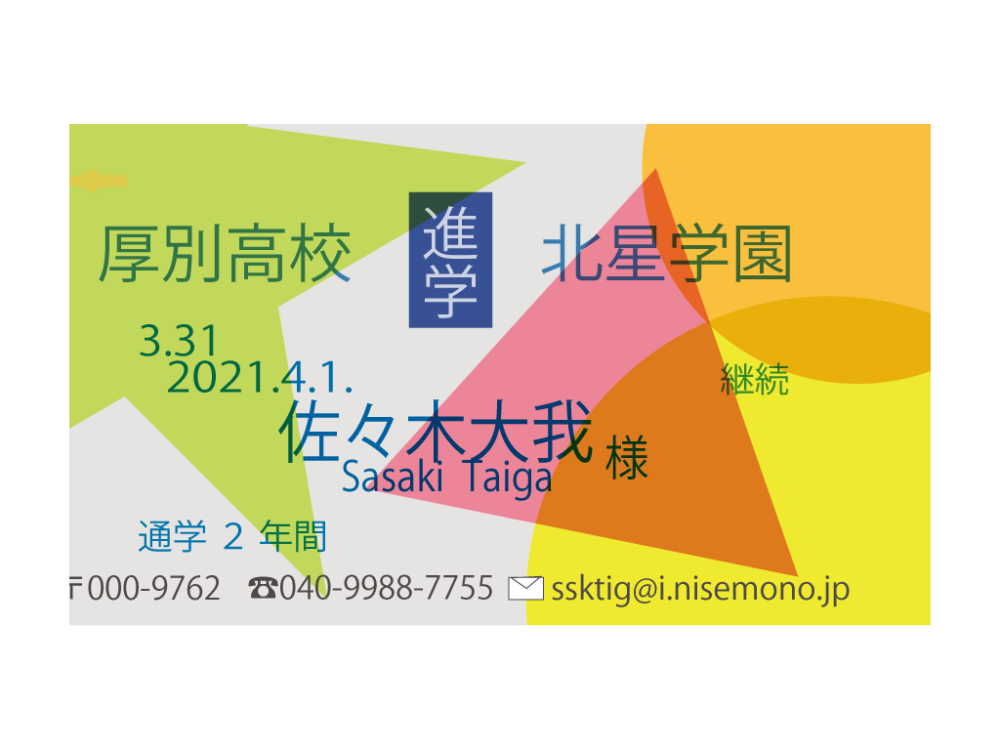
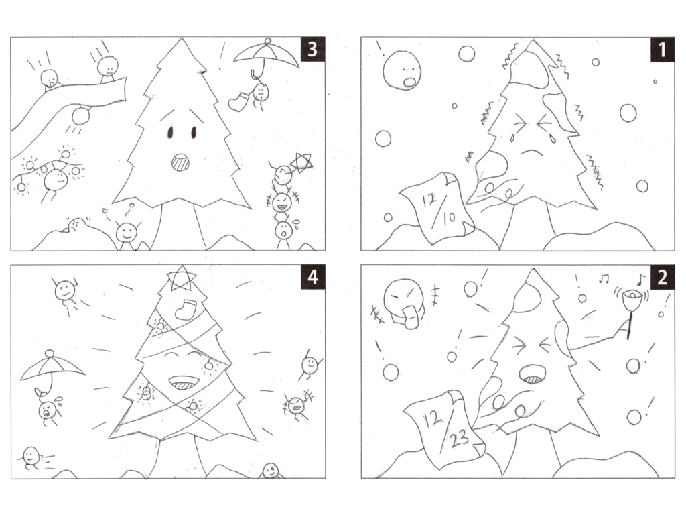
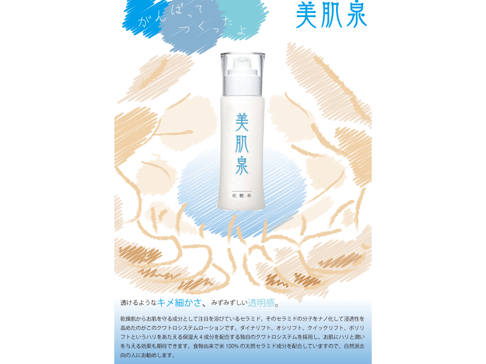

こちらの作品はICカードの定期券をモチーフにして作成しました。 自分の学歴を伝えつつ、伝えたい情報を見やすいように、を心がけました。

こちらの作品は、実際にはない化粧品を元に主婦層をターゲットにして作成しました。 子供がお母さんのことを思って書いているような表現を意識しました。

こちらの作品は「クリスマス」をモチーフに普通の木がクリスマスツリーに変貌する というイメージで作成しました。